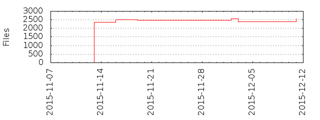

Files
- Total files
- 2485
- Total lines
- 444782
- Average file size
- 15811.79 bytes

| Extension | Files (%) | Lines (%) | Lines/file |
|---|
| 367 (14.77%) | 38662 (8.69%) | 105 |
| 11 | 3 (0.12%) | 1530 (0.34%) | 510 |
| 3ctype | 1 (0.04%) | 241 (0.05%) | 241 |
| bat | 2 (0.08%) | 10 (0.00%) | 5 |
| c | 2 (0.08%) | 67 (0.02%) | 33 |
| cache | 19 (0.76%) | 2042 (0.46%) | 107 |
| cc | 1 (0.04%) | 12 (0.00%) | 12 |
| class | 167 (6.72%) | 2382 (0.54%) | 14 |
| cmd | 2 (0.08%) | 11 (0.00%) | 5 |
| conf | 3 (0.12%) | 223 (0.05%) | 74 |
| css | 30 (1.21%) | 4285 (0.96%) | 142 |
| dll | 2 (0.08%) | 5385 (1.21%) | 2692 |
| el | 3 (0.12%) | 343 (0.08%) | 114 |
| fontified | 1 (0.04%) | 1107 (0.25%) | 1107 |
| gif | 1 (0.04%) | 8 (0.00%) | 8 |
| gnu | 1 (0.04%) | 174 (0.04%) | 174 |
| gyp | 1 (0.04%) | 1105 (0.25%) | 1105 |
| gypi | 1 (0.04%) | 101 (0.02%) | 101 |
| gz | 2 (0.08%) | 49 (0.01%) | 24 |
| html | 14 (0.56%) | 677 (0.15%) | 48 |
| iml | 2 (0.08%) | 1404 (0.32%) | 702 |
| ini | 1 (0.04%) | 65 (0.01%) | 65 |
| input | 5 (0.20%) | 54 (0.01%) | 10 |
| jade | 2 (0.08%) | 63 (0.01%) | 31 |
| jar | 4 (0.16%) | 4730 (1.06%) | 1182 |
| java | 10 (0.40%) | 304 (0.07%) | 30 |
| jnilib | 2 (0.08%) | 116 (0.03%) | 58 |
| jpg | 3 (0.12%) | 21567 (4.85%) | 7189 |
| js | 1089 (43.82%) | 242934 (54.62%) | 223 |
| json | 282 (11.35%) | 23394 (5.26%) | 82 |
| lock | 1 (0.04%) | 0 (0.00%) | 0 |
| log | 5 (0.20%) | 26178 (5.89%) | 5235 |
| map | 1 (0.04%) | 0 (0.00%) | 0 |
| markdown | 9 (0.36%) | 862 (0.19%) | 95 |
| md | 196 (7.89%) | 22930 (5.16%) | 116 |
| old | 1 (0.04%) | 298 (0.07%) | 298 |
| opts | 1 (0.04%) | 2 (0.00%) | 2 |
| patch | 6 (0.24%) | 2239 (0.50%) | 373 |
| pbfilespec | 1 (0.04%) | 27 (0.01%) | 27 |
| pdf | 3 (0.12%) | 1044 (0.23%) | 348 |
| png | 17 (0.68%) | 6342 (1.43%) | 373 |
| properties | 4 (0.16%) | 52 (0.01%) | 13 |
| py | 50 (2.01%) | 30202 (6.79%) | 604 |
| sbt | 4 (0.16%) | 46 (0.01%) | 11 |
| scala | 14 (0.56%) | 1450 (0.33%) | 103 |
| settings | 1 (0.04%) | 10 (0.00%) | 10 |
| sh | 6 (0.24%) | 188 (0.04%) | 31 |
| so | 2 (0.08%) | 43 (0.01%) | 21 |
| sql | 2 (0.08%) | 104 (0.02%) | 52 |
| tar | 1 (0.04%) | 0 (0.00%) | 0 |
| tgz | 3 (0.12%) | 158 (0.04%) | 52 |
| ttf | 2 (0.08%) | 5560 (1.25%) | 2780 |
| txt | 19 (0.76%) | 12804 (2.88%) | 673 |
| xclangspec | 1 (0.04%) | 226 (0.05%) | 226 |
| xml | 55 (2.21%) | 34357 (7.72%) | 624 |
| xsl | 2 (0.08%) | 1028 (0.23%) | 514 |
| yaml | 9 (0.36%) | 1194 (0.27%) | 132 |
| yml | 45 (1.81%) | 267 (0.06%) | 5 |
| yz | 1 (0.04%) | 1 (0.00%) | 1 |